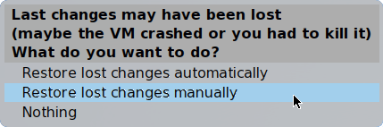

9.2 The Change Log
Cuis-Smalltalk records any action occurring in the environment: the code you
edit in the System Browser, the code you execute in a
Workspace. Therefore, in the event of a Cuis-Smalltalk crash you can restore
unsaved changes when you launch the same Cuis-Smalltalk image again. Let’s explore
this feature with a simple example.
On a fresh Cuis-Smalltalk installation, create a new class category named
TheCuisBook and within TheBook class:
- Over the class category pane of System Browser (at the most
left), do ...Right click →
add
items... (a)... key in TheCuisBook.
- Select this new class category and create the class
TheBook as a kind of Object: select the
TheCuisBook category then in the source code below edit the
class template to replace #NameOfClass with
#TheBook then save the class definition with
Ctrl-s.
Open a Workspace, then key in the following code:
| myBook |
myBook := TheBook new
Cuis-Smalltalk does not save code you key in the Workspace, but code you
execute. Let’s execute this code: Ctrl-a then Ctrl-p, the
Workspace prints the result: a TheBook, an instance of a
TheBook class.
Now kill Cuis-Smalltalk abruptly. On GNU/Linux, you can use the
xkill command to terminate Cuis-Smalltalk by clicking at its window.
Now start Cuis-Smalltalk again, and it immediately informs you there are unsaved
changes:

Figure 9.1: Cuis-Smalltalk informs about lost changes
From there you have three options:
- Restore lost changes automatically. Cuis-Smalltalk will
apply all the changes: new class definitions, new methods; edited
class definitions and method source code; executed code (in
Workspaces or any places where code can be executed). Often this is
not really what you want to do, particularly the executed code.
- Restore lost changes manually. In the subsequent
Lost changes window you are presented with the unsaved
changes, one per line, in chronological order, with the older ones
at the top of the list. You select each change (line) you want to
restore, then you apply your selection with the file in
selections button.
Figure 9.2: Manually select the changes to file in
To file-in the changes related to the creation of the
TheBook class but not the executed code in the Workspace, select
the two lines related to class definition.
The contextual menu (mouse right click) of the Lost changes
window offers a lot of options to filter the changes. Useful when
the batch of lost changes is important.
- Nothing. No changes are restored. Keep in mind that
unsaved changes aren’t discarded until you save your image.
In case you change your mind and you want to recover changes, do
...World menu → Changes... →
Recently logged Changes....
The system presents you a list of image snapshots tagged with a date
stamp. Pick up the one occurring just before you lost your code,
most likely at the top of the list. Then in the Recent
changes window, you proceed as described earlier to cherry pick the
changes to restore.